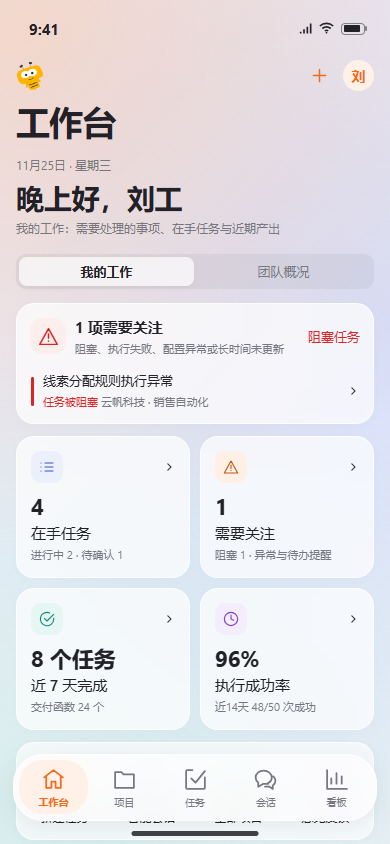

版本 A
原始 iOS 源码复现基准

用于独立评审的两份原型快照。A 为依据原仓库 iOS 源码复现的网页基准；B 为当前移动场景版。名称仅用于识别版本，不预设优劣。
请独立比较 ADCN 移动端原型的版本 A 与版本 B，不预设哪个版本更好。 主要场景：在手机上查看任务进展、查询项目基本信息、查看和补充需求、进入相关会话。 请分别评估：视觉层次与美观、信息密度、移动端操作效率、导航与术语清晰度、状态信息是否容易误解。 先描述实际观察到的差异，再给分项评价和结论；说明各版本适合什么用户，以及最值得保留和修改的地方。 两版均为合成数据的网页原型，不是真实后台或 iOS 真机应用。不要只按功能数量判断。 本页仅含截图。请据此评价视觉和可见的信息组织，明确注明交互操作尚未验证，不要臆测按钮点击后的行为。
公开内容仅包含本地合成示例的界面截图和新编写的评审页面，不包含原型源码或数据文件。快照日期：2026-11-25。原仓库：zhebinliu/adcn-mobile。